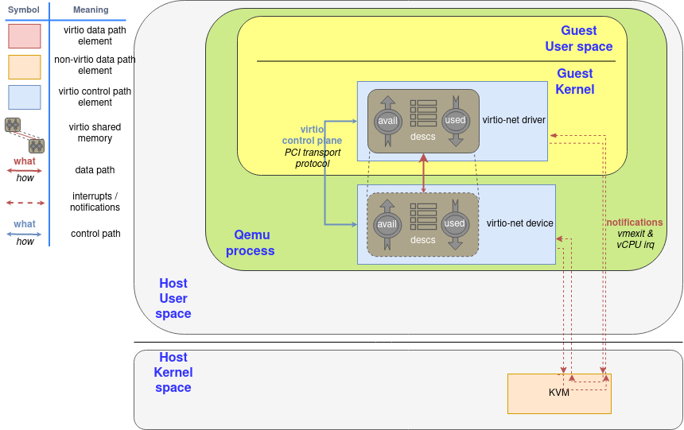

网络框架的功能需求
网络应用接口
回顾之前我们运行的 udpserver 样例应用：
#![allow(unused)] #![cfg_attr(feature = "axstd", no_std)] fn main() { #[macro_use] #[cfg(feature = "axstd")] extern crate axstd as std; use std::io; use std::net::{ToSocketAddrs, UdpSocket}; }
初看起来似乎我们使用了 std::net::UdpSocket 等接口，但在启用了 axstd 特性的情况下，实际上使用的是 ulib/axstd 中的对应的接口。
在 ArceOS 中，对于 Rust 应用，我们尽量提供与 std 等标准库相同的原生接口，对于 C 应用则通过 ulib/axlibc 提供 POSIX 接口，以提高应用兼容性。
选择网络协议栈
计算机网络协议种类繁多，作为 unikernel ，我们在满足应用需求的基础上，尽可能保持系统组件精简； 另一方面，从组件化的角度出发，我们可以选择已有的较成熟的协议栈实现，减少重复开发工作。 结合这两点，我们选择了 smoltcp 作为网络协议栈。 smoltcp 支持以太网, ARP/ND, IPv4/IPv6, ICMP/ICMPv6, TCP, UDP 等协议，可满足大部分应用的网络需求，在嵌入式和实时系统中得到广泛应用。 smoltcp 提供了所需的网卡设备抽象接口，我们在网卡驱动中实现该接口即可与协议栈整合：
#![allow(unused)] fn main() { pub trait Device { type RxToken<'a>: RxToken where Self: 'a; type TxToken<'a>: TxToken where Self: 'a; // Required methods fn receive( &mut self, timestamp: Instant ) -> Option<(Self::RxToken<'_>, Self::TxToken<'_>)>; fn transmit(&mut self, timestamp: Instant) -> Option<Self::TxToken<'_>>; fn capabilities(&self) -> DeviceCapabilities; } pub trait RxToken { // Required method fn consume<R, F>(self, f: F) -> R where F: FnOnce(&mut [u8]) -> R; // Provided method fn meta(&self) -> PacketMeta { ... } } pub trait TxToken { // Required method fn consume<R, F>(self, len: usize, f: F) -> R where F: FnOnce(&mut [u8]) -> R; // Provided method fn set_meta(&mut self, meta: PacketMeta) { ... } } }
Device 接口需要驱动实现接收、发送和查询设备功能的函数。
按照 smoltcp 的设计，接收和发送函数仅构造并返回对应的令牌 (token) ，直到令牌被消耗时才真正执行对应的接收和发送操作；
网卡的运行模式
常见的网卡通过 MMIO 或 PCI 等总线提供一组配置寄存器，通过一个或多个环形队列传递用于接收和发送数据的缓冲区描述符（包含地址、长度、编号等信息），数据平面由 DMA 访问对应的缓冲区传递数据。 这一 I/O 模式也不仅局限于网卡，在硬盘、显卡等设备上也很常见。
以 virtio-net 为例，下图是 virtio-net 的架构示意图：

我们的 unikernel 将运行在 Guest Kernel 的位置上。
descs 中存储了若干缓冲区描述符，avail 和 used 是两个环形队列，分别用于内核向设备提交可用的描述符，以及设备将使用过的描述符返回给内核。
网卡驱动的功能
仍然以 virtio-net 为例，网卡驱动发送数据包的典型过程如下：
- 驱动构造缓冲区和描述符，存入
desc表中； - 驱动将对应的缓冲区描述符写入
avail队列； - 驱动通知设备有缓冲区可用；
- 设备根据
avail队列找到对应的缓冲区描述符，再根据描述符从内存中读取数据并发送（在图中“设备”由宿主机用户态的 Qemu 进程模拟）； - 设备将发送完成的描述符写入
used队列； - 设备通知驱动发送完成；
- 驱动从
used队列中回收缓冲区。
接收过程与上述基本相同，区别在于此时设备向缓冲区中写入收到的数据，而非从中读取。 对于不同的网卡，队列的数量、描述符和命令的格式可能有区别 （例如有的按数组基址+偏移下标来指示缓冲区，有的直接传递地址指针，有的支持散布-收集 (scatter-gather) 的缓冲区）， 但整体的操作逻辑大同小异。 除此之外，还有些与具体网卡相关的初始化、配置等操作，这一部分需要根据网卡的硬件手册实现。